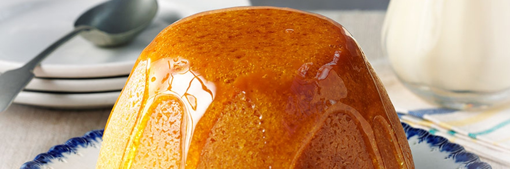

Sponge Pudding
Description
A syrupy basin pudding with a moist sponge and sticky sauce - a Great British tradition with retro charm
Ingredients
- 175g unsalted butter, softened, plus extra for greasing
- 3 tbsp golden syrup, plus extra for drizzling
- 1 tbsp fresh white breadcrumbs
- a splash of brandy (optional but delicious)
- 175g golden caster sugar
- zest 1 lemon
- 3 large eggs, beaten
- 175g self-raising flour
- 2 tbsp milk
- clotted cream, to serve
Steps
- STEP 1 - Use a small knob of butter to heavily grease a 1-litre pudding basin. In a small bowl, mix the golden syrup with the breadcrumbs and brandy, if using, then tip into the pudding basin.
- STEP 2 - Beat butter with sugar and zest until light and fluffy, then add eggs gradually. Fold in the flour, then finally add the milk.
- STEP 3 - Spoon the mix into the pudding basin. Cover with a double layer of buttered foil and baking paper, making a pleat in the centre to allow the pudding to rise. Tie the foil securely with string, then place in a steamer or large pan containing enough gently simmering water to come halfway up the sides of the basin. Steam for 1½ hrs. Turn out onto a serving dish. Serve with lashings of clotted cream and a little extra golden syrup drizzled over if you wish.